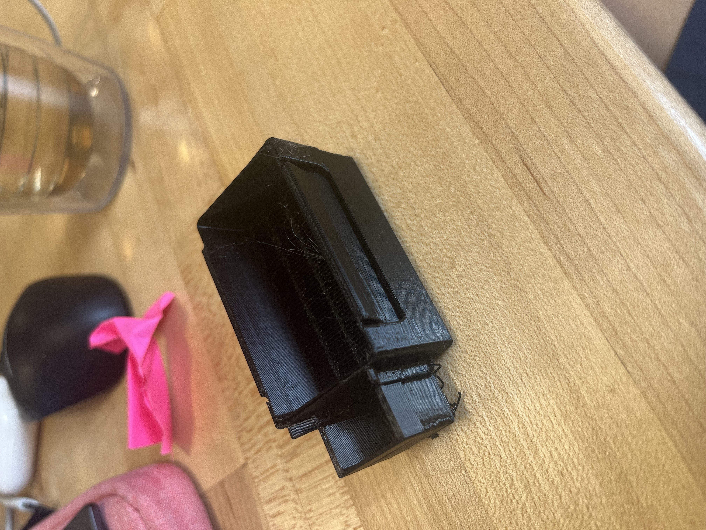
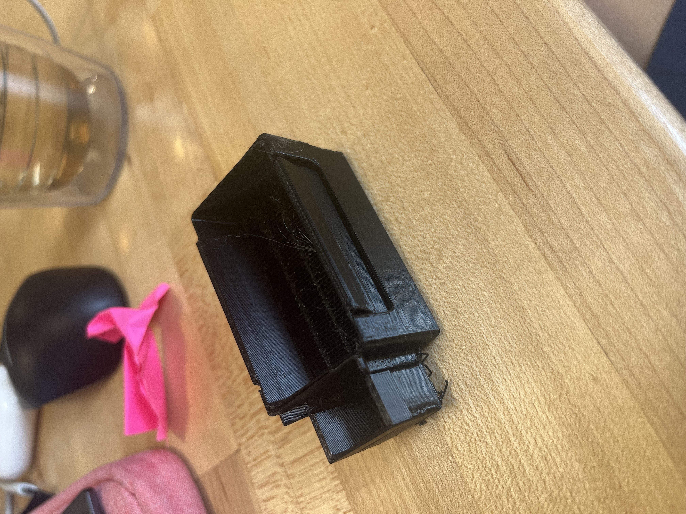

Engineering 11a Project 1
Part 1
WorkFlow
- Download and Install PrucaSlicer
- Download nametag file and change text
- Register print job
- Execute color change
- Finish print
Process
For this project, I started by downloading and setting up PrusaSlicer. Once the software was configured, I downloaded the provided nametag .3MF file and customized the text with my name. I experimented briefly with font sizes before choosing one that I liked. I made sure to “slice” keep the color change feature active so the text would stand out once printed. After starting the print I watched the process until the printer signaled for the color change, and then I swapped the filament to get the two tone effect. Going over sections of the Prusa mini+ Handbook helped me better understand the filament loading process. The workflow gave me useful experience in preparing a model in PrusaSlicer and carrying out a successful print to jump off from.
Part 2

Process
For my second print, I chose a castle-style torture test that featured tall towers and several steep overhangs. I deliberately sliced and printed it without supports to see how the Prusa MINI+ would handle challenging geometries. The vertical walls and towers came out fairly accurate, but the unsupported overhangs failed, bridges sagged and collapsed, leaving rough edges and incomplete features. This showed me that while the printer can reproduce simple and vertical shapes well, it struggles with designs that include large spans or unsupported angles unless supports are added. It also highlighted the design-side limitation: just because a 3D model looks good in CAD does not mean it is practical to print without modification.
In terms of file types, the STL I downloaded contained only the raw geometry of the castle, which meant I had to set up all of the slicing parameters myself in PrusaSlicer. A 3MF file, by contrast, can save not only the model but also the print settings, color changes, and other details, making it more useful for sharing ready-to-print projects.
Part 3


Process
For my open-source assistive device, I printed a tool designed to help hold a book open with one hand. The device fits over the thumb and uses two angled wings to press down the pages, making it easier to keep the book open without needing both hands. This design is especially useful for people with limited mobility, or for anyone who wants to comfortably read while using their other hand for something else.
The print came out clean and functional on the first try. The documentation from Makers Making Change was clear and easy to follow, with well-prepared STL files and usage instructions. I found that the device worked as intended, though I noticed that the size and angle could vary depending on the thickness of the book, something that might be improved by offering multiple size options or making the design adjustable. Overall, this project demonstrated how 3D printing can be used to quickly and inexpensively create personalized assistive tools that improve accessibility in everyday life.
Fall 2025 · Engineering 101
.png)
.png)
.png)
.png)

.png)
.png)
.png) 
